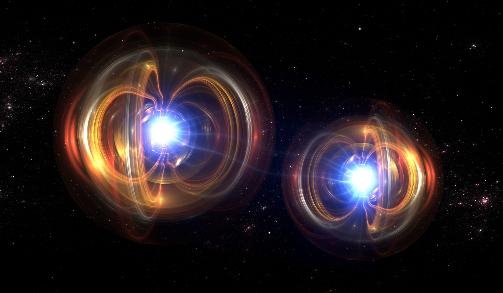

Programa Ejecutivo en Fundamentos y Aplicaciones de la Computación Cuántica

1. Descripción General
Este programa ofrece una formación rigurosa y estructurada en los fundamentos de la física cuántica y su aplicación en la computación cuántica moderna. Diseñado para un público académico y profesional de alto nivel, el curso integra teoría formal, análisis conceptual y estudio de aplicaciones estratégicas emergentes. La propuesta formativa aborda el tránsito histórico desde la física clásica hacia el paradigma cuántico, analizando las limitaciones conceptuales que dieron origen a una nueva formulación de la realidad física y computacional.
2. Objetivos Académicos
Al finalizar el programa, el participante será capaz de:
- Comprender formalmente los principios de cuantización, superposición y entrelazamiento.
- Analizar el rol de la función de onda y la naturaleza probabilística de la mecánica cuántica.
- Evaluar el impacto del principio de incertidumbre en sistemas físicos y criptográficos.
- Explicar la arquitectura conceptual de un qubit y su diferencia estructural frente al bit clásico.
- Interpretar el funcionamiento de algoritmos cuánticos como Shor y Grover.
- Identificar aplicaciones estratégicas en criptografía, simulación molecular y optimización.
3. Estructura
El programa se organiza en módulos secuenciales:
- 1.0 Introducción General a la Era Cuántica
- 2.0 De la Física Clásica a la Cuántica: Un Cambio de Paradigma
- 3.0 La Cuantización de la Energía: El Mundo a Escalones
- 4.0 Dualidad Onda-Partícula: La Doble Naturaleza de la Realidad
- 5.0 La Función de Onda: El Mapa de las Posibilidades
- 6.0 Principio de Incertidumbre: Los Límites del Conocimiento
- 7.0 Superposición Cuántica: Estar en Varios Estados a la Vez
- 8.0 Medición y Colapso: El Acto de Observar
- 9.0 Entrelazamiento Cuántico: Conexiones Fantasmales
- 10.0 Aplicaciones Reales de la Cuántica
- 11.0 Resumen General y Conexiones
4. Metodología
El enfoque pedagógico combina:
- Exposición conceptual estructurada.
- Modelos matemáticos simplificados pero rigurosos.
- Análisis comparativo entre sistemas clásicos y cuánticos.
- Estudios de caso en aplicaciones reales.
- Evaluaciones progresivas de comprensión. El curso prioriza profundidad conceptual, claridad formal y capacidad de transferencia del conocimiento al ámbito profesional.
5. Perfil del Participante
Dirigido a:
- Investigadores y académicos.
- Estudiantes sector tecnológico.
- Directivos interesados en tecnologías emergentes.
- Estudiantes de posgrado en ciencias, ingeniería o economía tecnológica. Se recomienda familiaridad básica con los fundamentos matemáticos.
6. Propuesta de Valor
Este programa no solo introduce los fundamentos de la computación cuántica; proporciona una comprensión estructural del nuevo paradigma tecnológico que está redefiniendo la seguridad digital, la simulación científica y la optimización a gran escala. Se trata de una formación orientada a líderes intelectuales y estratégicos que buscan comprender —con profundidad y rigor— una de las transformaciones científicas más relevantes del siglo XXI.